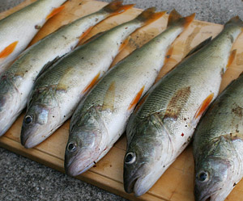

Greyerzer Egli-Knusperli
5,5 von 6Man nehme den zukünftigen Schwiegervater, ein Ruderboot, genügend verschiedene Löffeli und fahre an den Greyerzersee. Nach einigen Versuchen mit Würmer und Maden wechsle man auf Blinker-Technik und ziehe einen Egli nach dem anderen aus dem See. Falls sich die Eglis direkt unter dem Boot befinden, verwendet man am besten einen Jucker. Danach folgt mühsames Filetieren. Mit etwas Zitronensaft, Salz und Mehl bestäuben und in einer Bratpfanne bei starker Hitze kross braten, sofort servieren.
